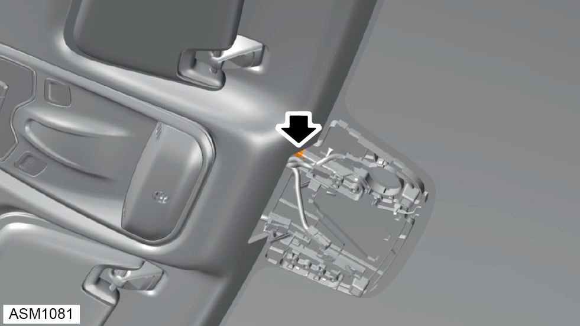
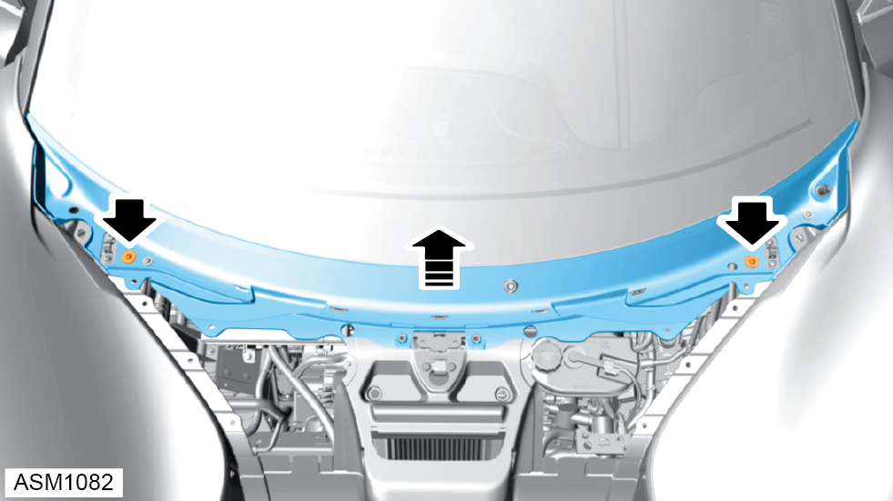
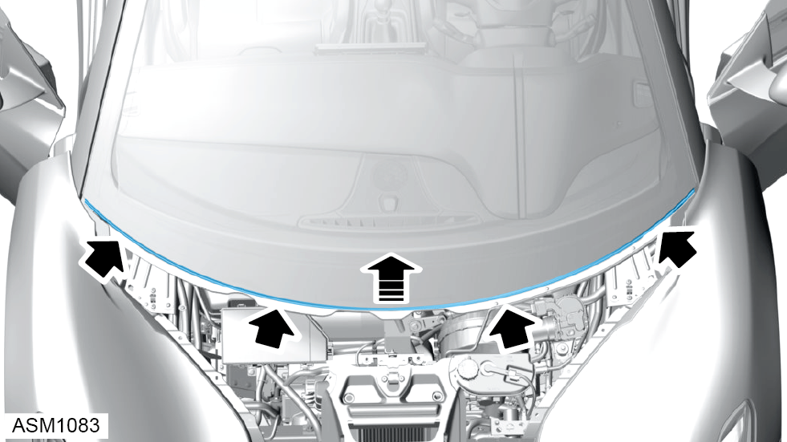
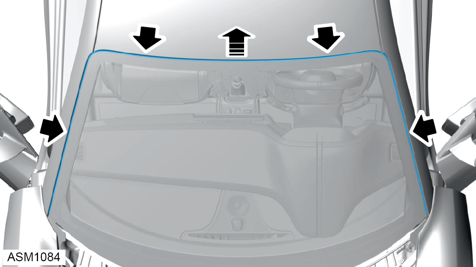
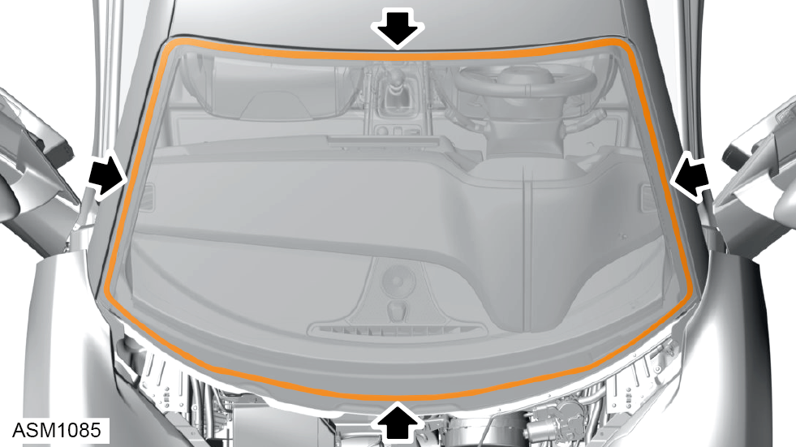
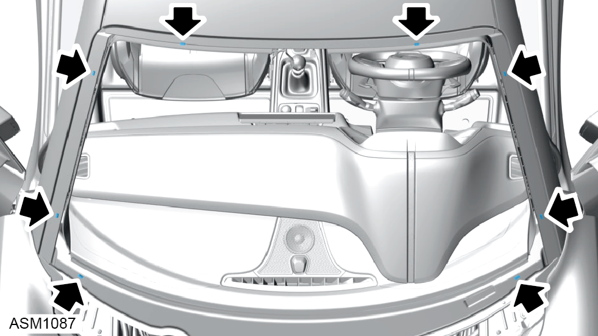
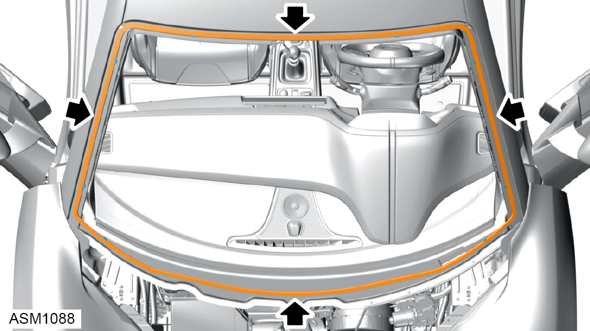

Windscreen
Print
Operation Code: 11.01.01-02
Removal
- Remove interior rear view mirror. Refer to procedure.
- Remove rain sensor. Refer to procedure.

- Disconnect harness connector from windscreen.
- Remove A-pillar trim left side. Refer to procedure.
- Remove A-pillar trim right side.
NOTE: Procedure is the same for left side component.
- Disconnect AM/FM harness connectors (x2) from windscreen.
- Remove grille frame front access panel. Refer to procedure.
- Remove duct radiator outlet left side. Refer to procedure.
- Remove duct radiator outlet right side.
NOTE: Procedure is the same for left side component.
- Remove wiper arm left side. Refer to procedure.
- Remove wiper arm right side.
NOTE: Procedure is the same for left side component.

- Remove M6x25 (x2) and washers securing windscreen cowl to vehicle. Torque 5 Nm.
NOTE: Always record quantity and fitted position of washers.
- Remove cowl.

- Remove seal from lower windscreen.

- Remove seal from windscreen perimeter.

- Using suitable equipment, cut adhesive securing windscreen glass to windscreen bonding surface.
- Using assistance remove windscreen.
NOTE: If glass is to be reused place on suitable surface to prevent damage.

- Remove rubber spacers (x8) from windscreen bonding surface.
Installation
- Installation is the reverse of removal procedure except for the following:
- Remove old adhesive from windscreen bonding surface.
- Clean windscreen mating surface using betaclean 3300.
- Clean windscreen using betaclean 3300.
- Apply betaprime 5404 primer to windscreen bonding surface.

- Apply betaseal 1580 to windscreen bonding surface.
- Install rubber spacers (x8) into adhesive.
- Reconnect harness connectors (x2) before bonding windscreen to windscreen bonding surface.
- Using assistance install windscreen to windscreen aperture.